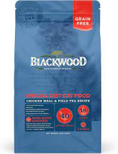

Royal Canin Kitten adalah product makanan kering dari Royal Canin untuk anak kucing dengan usia pertumbuhan kurang dari 1 tahun .Makanan kering ini baik untuk mendukung kesehatan pencernaan dan kualitas feses yang baik, Membangun pertahanan alami, Mendorong pertumbuhan yang sehat, Mengandung protein yang sangat mudah dicerna lebih dari 90%
Harga: Rp 266.000
Makanan Kucing Dry Food
Makanan kucing import dari Brazil dengan kualitas premium, kombinasi dari komposisi pilihan dapat memberikan nutrisi lengkap untuk kucing yang sedang bertumbuh. Dapat membantu keseimbangan flora usus. Mengurangi bau tinja. Berfungsi pada perkembangan kognitif.
Harga: Rp 147.000

Makanan Kucing Dry Food
Blackwood Cat Adult Rasa Chicken dan Rice ini mengandung 30% protein, 17% lemak dan 3% fiber sehingga sangat cocok untuk kucing dewasa yang aktif, selain itu makanan ini juga TIDAK MENGANDUNG jagung, gandum dan kacang kedelai sehingga sangat cocok untuk kucing yang sensitif
Harga: Rp 190.000
Makanan Kucing Dry Food
Makanan kucing kering dalam kemasan praktis. Cocok untuk kucing segala usia. Kitten dan Dewasa.
Kitchen Flavor terbuat dari daging dan sayuran berkualitas baik, tidak mengandung biji-bijian (Grains Free). Makanan ini juga tidak mengandung babi (Pork Free). Diformulasikan khusus untuk merawat dan memaksimalkan bulu kucing anda.
Harga: Rp 102.000
Makanan Kucing Wet Food
Royal Canin Mother Baby Cat Wet Food dibuat dengan teksture yang lembut, rasa lezat dan aroma yang menggugah selera kucing Anda. Nutrisinya yang lengkap dan mudah di cerna cocok sekali untuk anak kucing yang baru belajar makan beserta induknya yang sedang menyusui.
Harga: Rp 34.000
Makanan Kucing Wet Food
Whiskas
Dibuat dari ikan segar sangat disukai kucing dan bermanfaat untuk kucing. Kandungan gizi yang lengkap dan seimbang untuk memastikan pertumbuhan kucing yang sehat dan memberikan yang baik sistem kekebalan kucing.